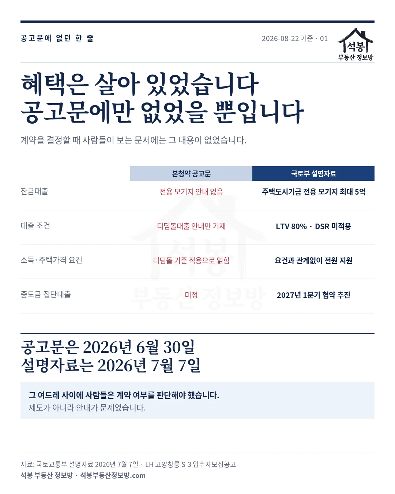
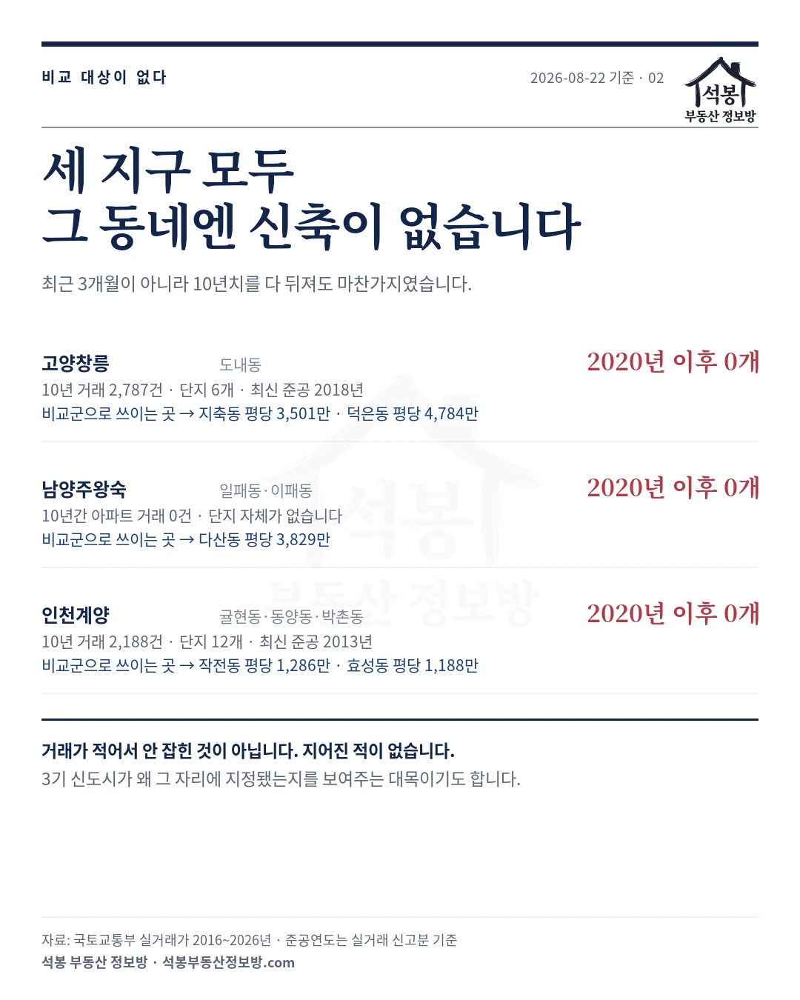
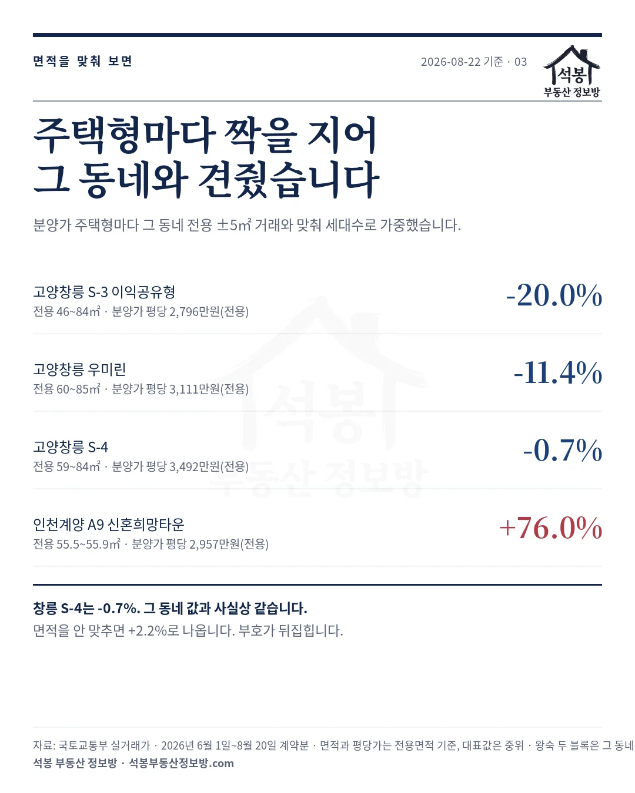
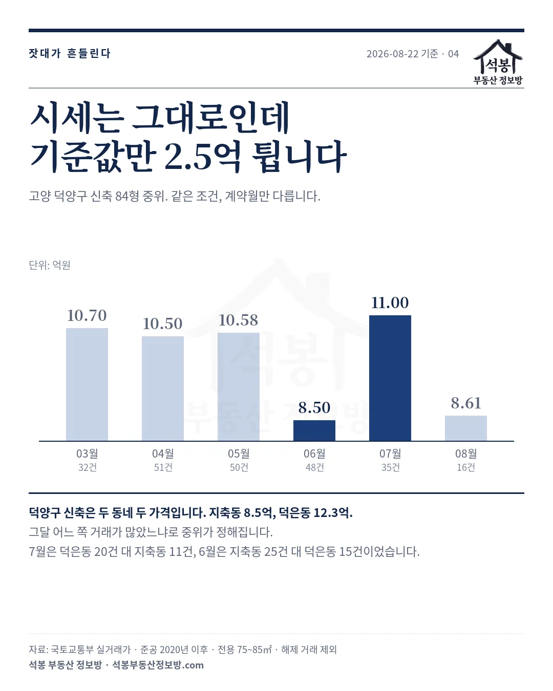

2026년 7월 27일에 「당첨자 절반이 떠난 자리에 433대 1이 몰렸다」는 글을 썼습니다. 그때 저희는 사전청약 당첨자들이 떠난 이유를 분양가가 4년 사이 30% 올라서라고 정리했습니다. 그게 절반이었습니다. 나머지 절반은 대출인데, 파고 보니 흔히 알려진 것과 달랐습니다. 약속됐던 전용 모기지는 없어지지 않았습니다. 본청약 공고문에서만 빠져 있었습니다. 그리고 남은 사람들이 무엇을 산 것인지는 저희 실거래로 다시 재봤습니다.
하나. 제도가 아니라 안내가 문제였습니다
사전청약 당첨자들이 2021년에 받은 안내에는 전용 모기지가 있었습니다. 그런데 2026년 6월 30일에 나온 본청약 입주자모집공고문에서는 그 내용이 빠지고 일반 디딤돌대출 안내만 들어갔습니다. 중도금 집단대출도 미정으로 남았습니다.
여기까지가 언론에 보도된 부분입니다. 그런데 국토교통부가 2026년 7월 7일 설명자료를 내면서 이야기가 달라집니다.
| 항목 | 본청약 공고문 | 국토교통부 설명자료 |
|---|---|---|
| 잔금대출 | 전용 모기지 안내 없음 | 주택도시기금 전용 모기지 최대 5억 |
| 대출 조건 | 디딤돌대출 안내만 기재 | LTV 80%, DSR 미적용 |
| 소득·주택가격 요건 | 디딤돌 기준 적용으로 읽힘 | 요건과 관계없이 전원 지원 |
| 중도금 집단대출 | 미정 | 2027년 1분기 협약 추진 |
혜택이 없어진 것이 아니었습니다. 국토교통부는 사전청약 당첨자에게 디딤돌대출의 소득기준과 주택가격 요건에 관계없이 주택도시기금 전용 모기지를 최대 5억원 한도로 차질 없이 지원하겠다고 밝혔습니다. LTV 80%에 DSR은 적용하지 않습니다. 중도금도 창릉 S-3의 첫 납부 시기가 2027년 5월이라 2027년 1분기에 집단대출 협약을 추진한다고 했습니다.
문제는 순서입니다. 공고문이 2026년 6월 30일에 나왔고 설명자료는 7월 7일에 나왔습니다. 그 여드레 동안 사전청약 당첨자들은 공고문에 적힌 것만 보고 계약을 할지 말지 판단해야 했습니다. 전용 모기지가 최대 5억인지 디딤돌 4억인지에 따라 필요한 자기자금이 1억쯤 달라지는데, 그 문장이 문서에 없었습니다.
계약을 포기한 사람들이 나온 배경이 여기에 있습니다. 다만 포기율 수치는 언론 보도로 전해진 것이고 시점도 저희가 확인하지 못해, 이 글에서는 숫자를 따로 쓰지 않겠습니다. 분명한 것은 제도가 아니라 안내가 흔들렸다는 점입니다. 국토교통부도 앞으로 나올 뉴:홈 나눔형·선택형 공고문에는 이 내용을 반영하겠다고 밝혔습니다.

가입하시면 지역 시장조사 보고서(약식)를 2회 무료로 요청하실 수 있습니다.
둘. 그러면 남은 사람은 무엇을 산 걸까요
여기서부터는 저희가 직접 잰 부분입니다. 3기 신도시 기사에는 늘 "주변 시세보다 몇 퍼센트 싸다"는 문장이 붙습니다. 그런데 그 주변이 어디인지를 좁혀 보면 이상한 것이 하나 나옵니다.
세 지구 모두, 지구가 실제로 들어서는 그 동네에는 준공 5년 이내 신축이 한 건도 없습니다. 거래가 적어서 안 잡힌 것이 아닙니다. 2016년부터 지금까지 10년치를 다 뒤져도 마찬가지였습니다.
| 지구 | 들어서는 동 | 10년 거래·단지 | 가장 최근 준공 |
|---|---|---|---|
| 고양창릉 | 도내동 | 2,787건 · 6개 단지 | 2018년 |
| 남양주왕숙 | 일패동·이패동 | 0건 · 단지 없음 | 해당 없음 |
| 인천계양 | 귤현동·동양동·박촌동 | 2,188건 · 12개 단지 | 2013년 |
도내동은 10년간 2,787건이나 거래됐는데도 2020년 이후 지어진 단지가 없습니다. 계양 세 동은 열두 단지가 있지만 최신이 2013년입니다. 남양주 일패동과 이패동은 10년간 아파트 거래가 한 건도 없습니다. 단지 자체가 없는 땅입니다. 3기 신도시가 왜 그 자리에 지정됐는지를 보여주는 대목이기도 합니다.
그래서 비교할 값이 없습니다. 기사도 저희도 옆 동네를 끌어다 씁니다. 창릉은 지축동(평당 3,501만원)이나 덕은동(평당 4,784만원), 왕숙은 다산동(평당 3,829만원), 계양은 작전동(평당 1,286만원)이나 효성동(평당 1,188만원)입니다. 어느 쪽을 고르느냐로 결론이 달라집니다.

셋. 면적을 맞춰 그 동네와 견줬습니다
비교 방법부터 밝힙니다. 평당가는 면적이 작을수록 높게 나옵니다. 신도시 분양은 중소형이 많은데 동네 거래에는 대형이 섞여 있어서, 그냥 중위끼리 붙이면 갭이 부풀려지거나 줄어듭니다. 그래서 분양 주택형마다 그 동네의 전용 ±5㎡ 거래와 짝을 지어 비교하고, 세대수로 가중해 한 값으로 묶었습니다.
| 블록 | 주택형 범위 | 분양가 평당(전용) | 그 동네 대비 |
|---|---|---|---|
| 고양창릉 S-3 이익공유형 | 전용 46~84㎡ | 2,796만원 | -20.0% |
| 고양창릉 우미린 | 전용 60~85㎡ | 3,111만원 | -11.4% |
| 고양창릉 S-4 | 전용 59~84㎡ | 3,492만원 | -0.7% |
| 인천계양 A9 신혼희망타운 | 전용 55.5~55.9㎡ 단일 | 2,957만원 | +76.0% |
도내동에 들어서는 창릉 S-4가 -0.7%입니다. 그 동네 아파트값과 사실상 같습니다. 그런데 도내동에서 거래되는 아파트는 2013년부터 2018년 사이에 지어진 것들입니다. 10년 안팎 된 아파트와 새 아파트 분양가가 같은 값이라는 뜻입니다.
이 값은 면적을 맞췄기 때문에 나온 것입니다. 도내동 전체 면적대 중위와 그냥 붙이면 S-4가 +2.2%로 나옵니다. 도내동 거래에는 전용 100㎡(30.2평)가 넘는 대형까지 섞여 있고 소형일수록 평당이 높아서, 짝을 안 지으면 부호가 뒤집힙니다. 저희도 처음 계산에서 그렇게 나왔다가 다시 맞췄습니다.
같은 도내동 안에서도 값이 갈립니다. 최근 3개월 거래를 단지별로 나눠 보면 이렇습니다.
| 단지 | 준공 | 거래 | 평당(전용) |
|---|---|---|---|
| 고양원흥동일스위트 | 2018년 | 11건 | 3,968만원 |
| 원흥호반베르디움더퍼스트5단지 | 2017년 | 19건 | 3,502만원 |
| 도래울파크뷰 | 2013년 | 9건 | 3,337만원 |
| 도래울센트럴파크(CentralPark) | 2013년 | 5건 | 2,998만원 |
| 도래울센트럴더힐 | 2015년 | 18건 | 2,928만원 |
| 도래울센트럴더포레 | 2014년 | 16건 | 2,763만원 |
가장 비싼 곳과 싼 곳이 1.44배 벌어집니다. 원흥지구 쪽(2017~2018년 준공)과 도래울마을 쪽(2013~2015년 준공)이 다른 값으로 움직입니다. 동 단위로 내려와도 여전히 섞여 있다는 뜻입니다.
인천계양 A9은 반대 방향으로 셉니다. 지구 옆 동네와 견주면 +76.0%입니다. 그 동네에 오래된 아파트만 있어서 그런데, 뒤집어 말하면 계양은 새 아파트가 들어서면 동네 시세 자체가 다시 매겨질 자리라는 뜻이기도 합니다.
이 글의 평당가는 모두 전용면적 기준입니다. 실무에서 흔히 쓰는 공급면적 기준으로 보면 25%쯤 낮은 숫자가 됩니다. 저희 실거래 자료에는 공급면적이 없어 환산값을 따로 적지 않았습니다. 분양가와 실거래를 같은 전용 기준으로 맞춰 비교했으니 대비율은 그대로 보셔도 됩니다.
넷. 분양가상한제인데 왜 동네값과 같아졌을까요
여기서 "공공분양은 분양가상한제 아니냐, 그럼 원래 싸야 하는 것 아니냐"는 질문이 나옵니다. 맞는 말인데 한 가지가 빠져 있습니다. 분양가상한제는 주변 시세에 연동하지 않습니다. 택지비와 건축비를 더해 상한을 정하는 원가 방식입니다. 주변이 비싸면 그만큼 싸 보이고, 주변이 안 오르면 차이가 사라집니다.
도내동이 그 경우입니다. 그 동네 전용 84㎡(25.4평)를 연도별로 재봤습니다.
| 계약년 | 2020년 | 2021년 | 2023년 | 2025년 | 2026년 |
|---|---|---|---|---|---|
| 도내동 84형 중위 평당(전용) | 2,370만원 | 3,194만원 | 2,522만원 | 2,958만원 | 3,189만원 |
2021년에 평당 3,194만원이었고 2026년에 3,189만원입니다. 5년 동안 0.1% 움직였습니다. 2023년에 2,522만원까지 빠졌다가 겨우 제자리로 돌아온 것입니다.
반대쪽에서는 원가가 올랐습니다. 저희가 7월 27일 글에서 짚었듯 인천계양 A9블록의 공사비는 사전청약 당시 1,734억원에서 본청약 시점 2,812억원으로 4년 새 62% 늘었습니다. 분양가상한제는 그 오른 원가를 반영합니다.
정리하면 이렇습니다. 분양가상한제 때문에 같아진 것이 아니라, 상한제인데도 같아진 것입니다. 동네 시세는 5년째 제자리인데 짓는 값만 올랐고, 두 선이 만난 자리가 지금입니다. "공공분양이니 주변보다 싸겠지"는 주변이 오르고 있을 때만 성립하는 계산입니다.

다섯. 그 잣대가 매달 흔들린다는 것도 말씀드려야겠습니다
기사가 흔히 쓰는 방식은 시군구 단위입니다. "덕양구 신축 84형 중위가 얼마"라는 식입니다. 그 값을 계약월별로 펼쳐 봤습니다. 조건은 똑같이 준공 2020년 이후, 전용 75~85㎡입니다.
| 계약월 | 3월 | 4월 | 5월 | 6월 | 7월 | 8월 |
|---|---|---|---|---|---|---|
| 덕양구 신축 84형 중위 | 10.70억 | 10.50억 | 10.58억 | 8.50억 | 11.00억 | 8.61억 |
한 달 만에 8.50억에서 11.00억으로 갔다가 다시 8.61억으로 돌아옵니다. 차이가 2.5억입니다. 실제 시세가 그렇게 움직였을 리 없습니다.
이유를 찾아보니 간단했습니다. 덕양구 신축은 사실상 두 동네 두 가격입니다. 지축동이 8.5억 언저리, 덕은동이 12.3억 언저리인데 각 동네 안에서는 거의 안 움직입니다. 그런데 시군구 중위는 그달 어느 쪽 거래가 많았느냐로 정해집니다. 7월은 덕은동 20건 대 지축동 11건이었고, 6월은 지축동 25건 대 덕은동 15건이었습니다.
그래서 같은 분양가가 어느 달 기준이냐에 따라 비싸지기도 하고 싸지기도 합니다. 창릉 S-4 최고가 타입 8.67억을 덕양구 6월(8.50억) 기준으로 보면 분양가가 더 비싸고, 7월(11.00억) 기준으로 보면 2.33억 싼 물건이 됩니다. 저희가 7월 27일 글에서 쓴 "덕양구 신축 중위 8.56억"도 그때 그 달의 값이었습니다.

2026년 7월 27일 글에 "하남 교산과 부천 대장은 아직 확정 분양가가 나오지 않았습니다"라고 썼습니다. 정확하지 않은 문장이었습니다. 두 지구 모두 2025년에 첫 블록을 이미 분양했습니다. 교산 푸르지오 더 퍼스트 1,115세대, 부천대장 A5·A6·A7·A8 1,964세대입니다. 저희가 뜻한 것은 남은 블록이었고, 그 부분은 지금도 확정 분양가가 나오지 않은 것이 맞습니다. 문장을 고쳐 두었습니다.
기준을 확인하고 들으셔야 합니다
사전청약 당첨자가 떠난 자리는 분양가만으로 설명되지 않습니다. 4년 전에 안내받은 대출이 본청약 공고문에서 빠진 것이 계약을 앞둔 사람에게는 1억짜리 문제였습니다. 혜택 자체는 살아 있었는데 그 사실이 공고문에 없었습니다.
그리고 "주변보다 싸다"는 말은 어느 동네, 어느 달을 기준으로 한 것인지 확인하고 들으셔야 합니다. 세 지구 모두 그 동네에 비교할 신축이 없어서 남의 동네를 끌어다 쓰고, 그 남의 동네 값도 계약월에 따라 2.5억씩 움직입니다. 저희가 쓴 숫자도 예외가 아닙니다. 그래서 이 글의 표에는 기준 동네와 기준 기간을 전부 적어 두었습니다.
고양창릉 S-3과 S-4의 당첨자 발표는 2026년 8월 18일과 19일이었습니다. 공공분양 결과는 청약홈 공개 자료에 들어오지 않아 저희 데이터로는 아직 확인되지 않습니다. 결과가 정리되는 대로 따로 올리겠습니다.
원자료: 국토교통부 실거래가 공개시스템(아파트 매매, 해제 거래 제외) · 동네 중위 평당가는 2026년 6월 1일~8월 20일 계약 신고분, 시군구 신축 84형 중위는 준공 2020년 이후·전용 75~85㎡ · 기준일 2026년 8월 22일(실거래 신고분은 8월 20일 계약분까지)
분양가는 한국부동산원 청약홈 분양정보의 주택형별 공급금액이며, 면적과 평당가는 모두 전용면적 기준이고 대표값은 중위입니다
전용 모기지 한도·LTV·DSR·중도금 협약 시기는 국토교통부 설명자료(2026년 7월 7일)를 서울경제·아주경제 보도로 확인한 것이며 저희가 잰 값이 아닙니다
남양주왕숙 두 블록은 지구 소재 법정동 거래가 0건이라 동네 비교에서 제외했습니다 · 편집·제작: 석봉 부동산 정보방 · 투자 권유가 아닙니다.